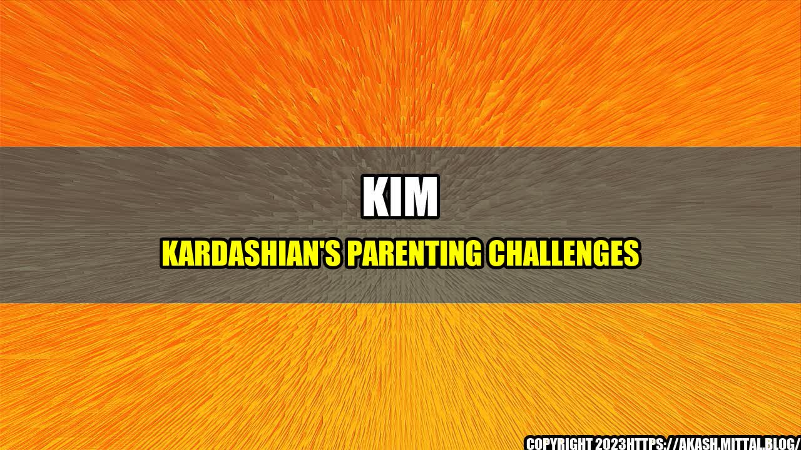

The Emotional Struggles of Kim Kardashian as a Parent

Kim Kardashian is one of the most successful and popular celebrities in the world, but her life is not as perfect as it may seem. Like many parents, she faces various challenges and difficulties raising her four children with Kanye West: North, Saint, Chicago, and Psalm. In a recent interview, Kim was honest and vulnerable about her struggles as a parent, revealing that she often cries herself to sleep at night due to the stress and anxiety of the responsibilities she has to shoulder.
The Challenges of Parenting in the Public Eye
One of the main difficulties that Kim faces as a parent is the constant scrutiny and criticism from the media and the public. Being a celebrity means that every aspect of your life is under the microscope, and this can be particularly challenging when it comes to parenting. Kim has been criticized for various reasons, such as dressing her daughter in inappropriate clothes or allowing her children to have too much screen time. These criticisms can be hurtful and demoralizing, especially when they are unfounded or based on misinformation. As Kim commented in the interview, "It's hard when people are constantly judging you and making assumptions about your parenting skills. You feel like you can never do anything right."
Another challenge of parenting in the public eye is the pressure to maintain a certain image or brand. Kim has built her career on her beauty, fashion, and lifestyle choices, and she is expected to continue to live up to these standards even as a mom. This can lead to unrealistic expectations and a constant need to look and act perfect all the time, which can be exhausting and stressful. As Kim admits, "I want to be the best mom I can be, but sometimes I feel like I'm failing. I'm not always going to be perfect, and that's okay. But it's hard when people expect you to be."
The Daily Struggles of Parenting Four Young Children
In addition to the public pressures, Kim also faces the daily challenges of raising four young children. Each child has their own personality, needs, and demands, and it can be difficult to give everyone the attention and care they deserve. Kim has to juggle various responsibilities, such as school pickups and drop-offs, feeding and bathing the kids, and keeping the household running smoothly. As she revealed in the interview, "Some days, I feel like a supermom, and other days, I'm barely hanging on. It's a constant balancing act, and it's not easy."
One of the specific challenges that Kim faces as a mom is dealing with her children's different ages and stages. Her eldest daughter North is now seven years old and entering the pre-teen phase, while her son Saint is four years old and still in the toddler phase. Kim also has two younger children, Chicago, who is two years old, and Psalm, who is one year old. Handling the different needs and behaviors of each child can be overwhelming and exhausting, especially when they are all vying for your attention at the same time. As Kim shared, "Sometimes I feel like I'm in the circus, trying to keep all the plates spinning at once. It's a lot of work, and it can feel like you're never catching up."
The Emotional Toll of Parenting
Finally, one of the most significant challenges that Kim faces as a parent is the emotional toll it takes on her. Parenting is hard, and it's easy to feel overwhelmed, stressed, and anxious. Kim is no exception, and she admits that she often struggles with her mental health as a result of the constant pressures she faces. She shared in the interview, "Some days, I just feel like I can't do it anymore. I feel like a failure as a mom, and I wonder if I'm doing more harm than good. It's a lonely and isolating feeling, and it can be hard to shake off."
Kim's struggles are not unique, and many parents can relate to the challenges she faces. Parenthood is a rollercoaster of emotions, and it's important to be kind and compassionate to yourself as you navigate the ups and downs. As Kim mentions, "It's okay to not be okay sometimes. It's okay to ask for help and support when you need it. And it's okay to make mistakes and learn from them."
Conclusion
In summary, parenting is a difficult and complex journey, and even celebrities like Kim Kardashian face their fair share of challenges and struggles. From dealing with public scrutiny to balancing the demands of four young children, Kim has a lot on her plate, and it's not always easy to cope. However, by being honest, vulnerable, and compassionate, Kim is setting an example for other parents to follow. Parenthood is not about being perfect; it's about doing your best and loving your children unconditionally. As Kim says, "At the end of the day, I know my children love me, and that's all that matters."
- Parenting in the public eye can be difficult due to constant scrutiny and criticism from the media and the public.
- Raising four young children can be overwhelming and exhausting, especially when they have different ages and stages.
- Parenting can take an emotional toll, which can lead to feelings of stress, anxiety, and loneliness.
Curated by Team Akash.Mittal.Blog
Share on Twitter Share on LinkedIn